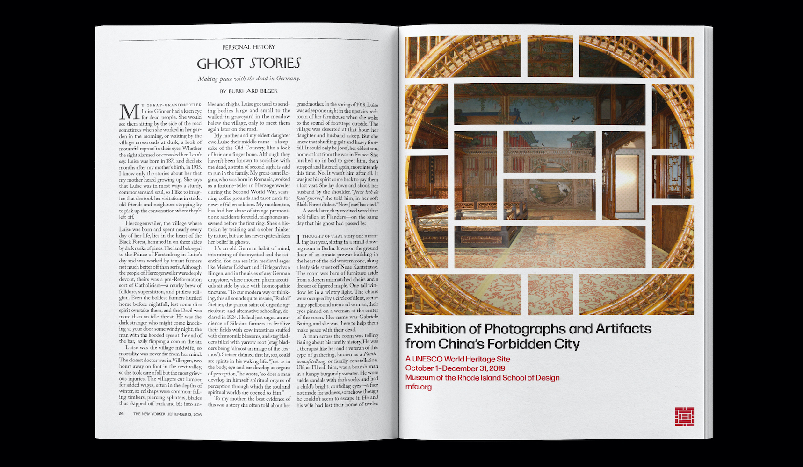
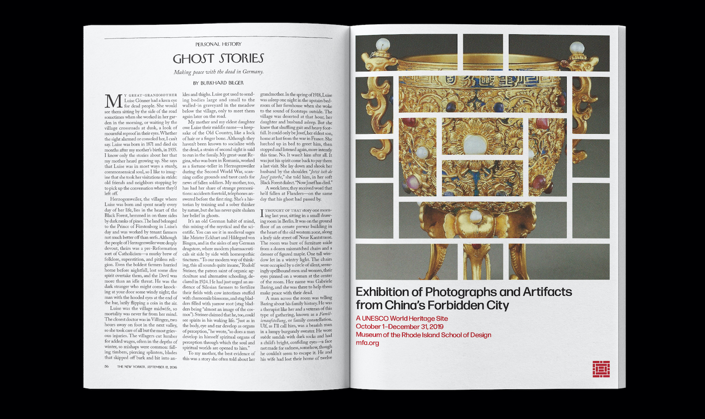
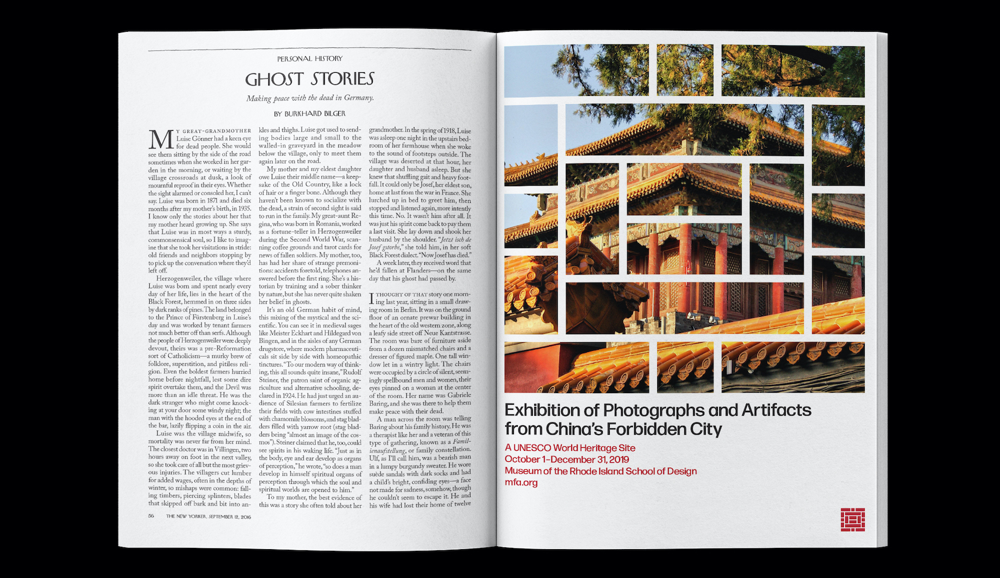
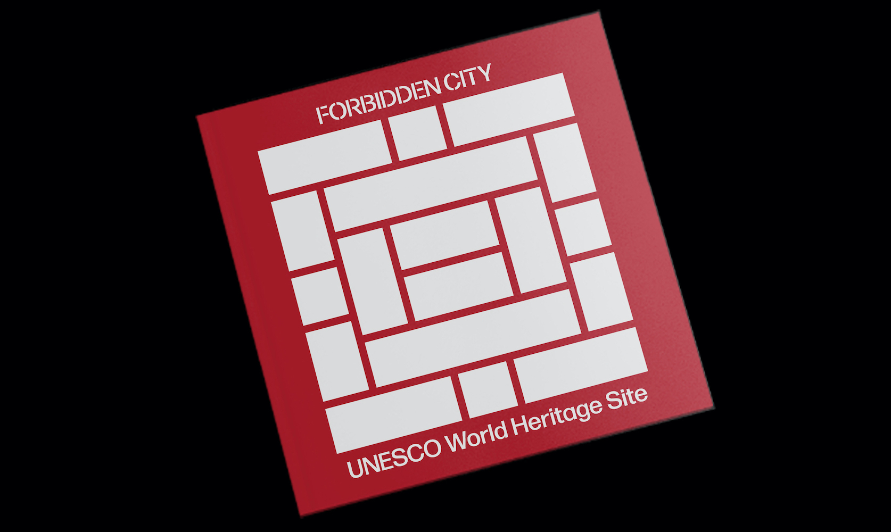
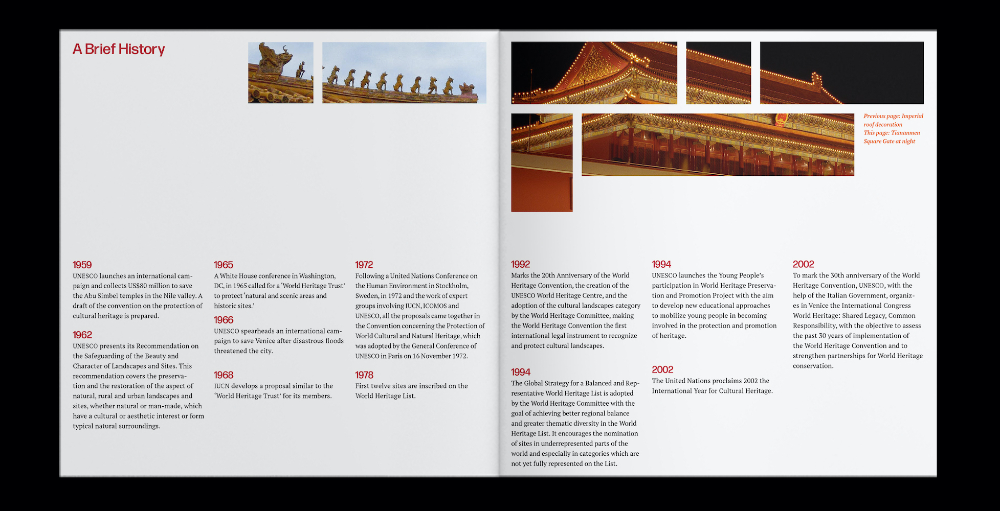
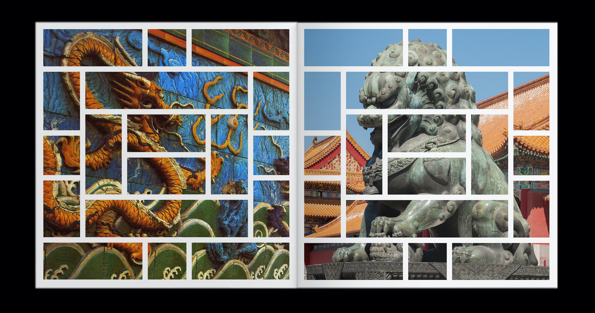

Nina Yuchi
The Forbidden City: UNESCO World Heritage Site Branding
Branding identity, print design, web design
In this project, I designed the brand identity for the Imperial Palaces of the Ming and Qing Dynasties in Beijing and Shenyang in China (sometimes referred generally as the Forbidden City), a UNESCO Heritage Site. Even when completing assignments for class, I always embed my individuality and personal interests to make these projects more meaningful. When I was young I frequently visited relatives in China and toured the Forbidden City with them so this place not only holds cultural and aesthetic value to me but also lives in my childhood memory. Drawing inspiration from the geometric windows in the Palace Museum, I designed the logo reflecting the building's traditional architecture.
With the brand identity, I designed a site sign, print advertisements for the New Yorker, and a website for desktop, tablet, and mobile users, using the logo as a window framing the beautiful images of the city complex.
New Yorker print advertisements
  Site sign
Publication
  Desktop, tablet, and mobile site